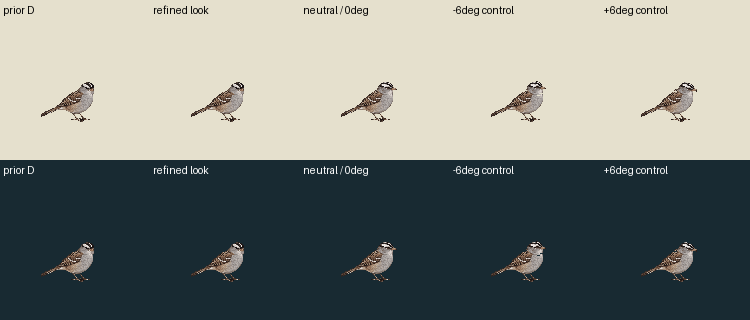
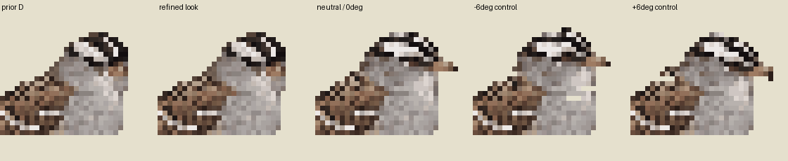

One inspected ownership contour; exact visible neutral/look donor pixels. Body, wings, tail, legs and feet are a static canonical group. No hidden underpaint, recoloring, softening, body fit or new image call.
Actual finite rendered angle parameter:
| Prior D attention / neutral control reference | New contour / actual finite roll trial | |
|---|---|---|
| Light | ||
| Dark |
The world123.428571 scale is preserved in the124CSS transparent ceiling stage. The real neutral head layer is sampled by inverse nearest neighbor around the documentary point(74,68); these are in-plane controls, not3D yaw or a biological joint. Each nonzero roll leaves14 previously visible neck-cutout pixels uncovered. Both are held; gaps are retained without invented artwork. Main attention retains its original60/18/12@30Hz schedule, separate from the90-tick roll study. Exact neutral return; no travel. Contacts[]/support:null are not physical support approval.
Main attention APNG · Held roll APNG · Recipe and matrices · Protection, holes and occlusion diagnostics

Enlarged cluster and gap inspection:
